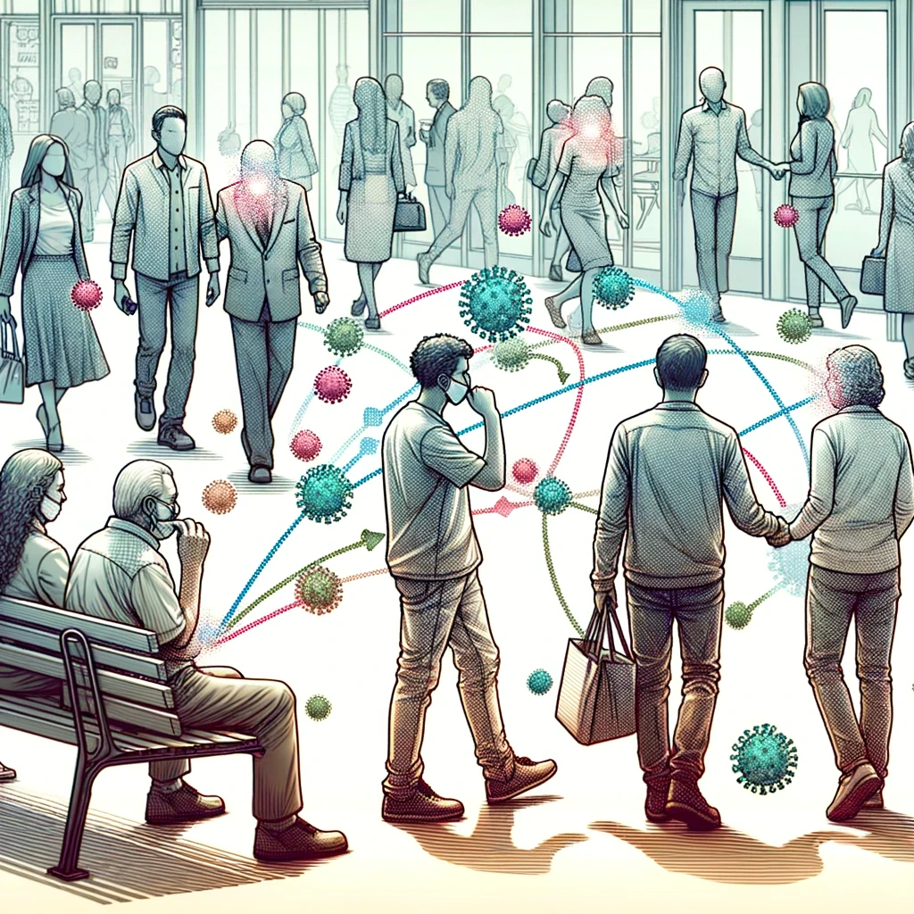
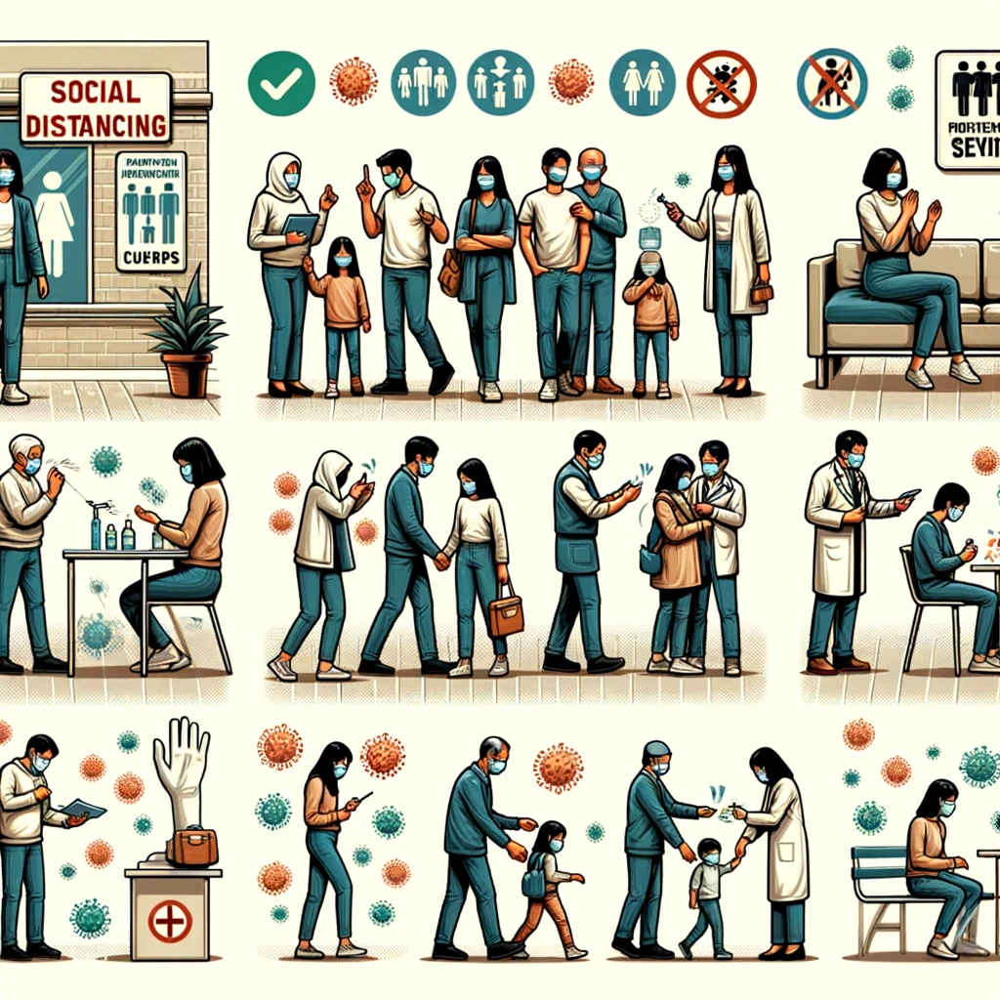
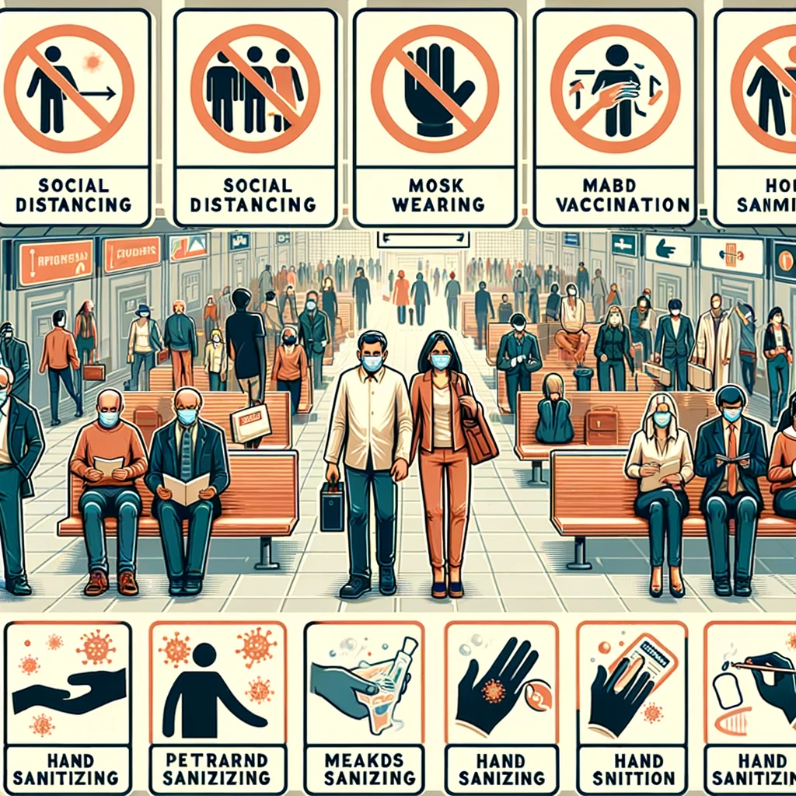
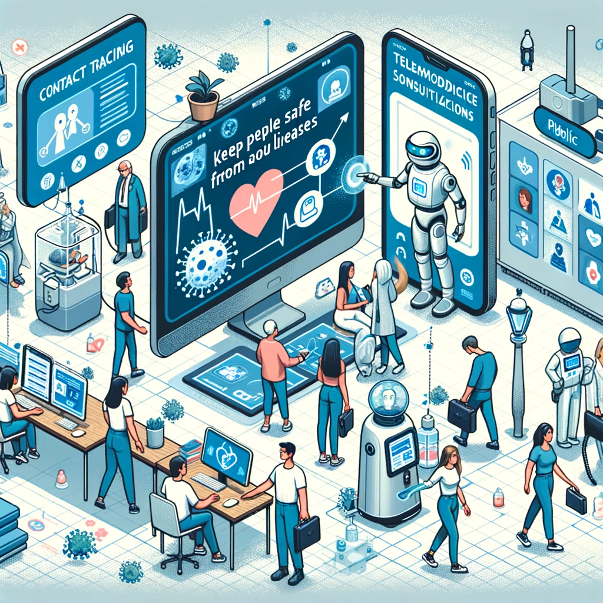

Nosso organismo está suscetível a uma variedade de doenças infecciosas que podem ser transmitidas entre indivíduos. Algumas dessas infecções podem ter um impacto profundo em nossa saúde, afetando órgãos e sistemas vitais. Neste contexto, exploraremos detalhes abordando como essas enfermidades podem influenciar a saúde e o bem-estar das pessoas.
Doenças transmissíveis são enfermidades causadas por patógenos como vírus, bactérias, fungos ou parasitas, que podem ser propagadas, direta ou indiretamente, de uma pessoa para outra, ou através de vetores como mosquitos e animais. Essas doenças variam desde infecções respiratórias comuns até condições mais graves como HIV/AIDS, tuberculose e malária.
De acordo com pesquisas científicas recentes, o cenário global das doenças transmissíveis é complexo e desafiador. A pandemia de COVID-19 destacou a rápida disseminação e o impacto significativo das doenças infecciosas. Além disso, doenças como malária, tuberculose e HIV/AIDS continuam a ser grandes preocupações de saúde pública, especialmente em países com recursos limitados. O aumento da resistência aos antimicrobianos também é uma crescente preocupação global, tornando o tratamento de algumas infecções bacterianas mais difícil.
A globalização e o aumento das viagens internacionais têm contribuído para a rápida propagação de doenças infecciosas além das fronteiras geográficas. Epidemias como o Ebola e o Zika também evidenciam como doenças inicialmente confinadas a áreas específicas podem se tornar ameaças globais. Adicionalmente, a desigualdade no acesso a recursos de saúde e a diferenças socioeconômicas ampliam as disparidades na vulnerabilidade e na capacidade de resposta a estas doenças. Essa situação é exacerbada em áreas com sistemas de saúde frágeis, onde a prevenção e o controle de doenças transmissíveis são particularmente desafiadores.
No contexto atual, as desigualdades na distribuição de vacinas e tratamentos têm chamado atenção. Países com recursos limitados enfrentam grandes desafios para acessar as tecnologias de saúde mais recentes, o que agrava as disparidades em saúde global. Este cenário evidencia a necessidade de uma abordagem mais equitativa e colaborativa em saúde global, enfatizando a importância de iniciativas internacionais de partilha de recursos, conhecimento e tecnologias para combater eficazmente as doenças transmissíveis.
A prevenção de doenças transmissíveis envolve uma combinação de medidas de saúde pública, como vacinação, higiene, saneamento, e educação em saúde. O tratamento depende do tipo específico de patógeno envolvido e pode incluir a administração de antibióticos, antivirais, antifúngicos ou medicamentos antiparasitários. A detecção precoce e o tratamento adequado são cruciais para controlar a disseminação de doenças infecciosas e reduzir a mortalidade.
A educação e a conscientização pública são fundamentais para promover comportamentos preventivos, como a lavagem das mãos e o uso de métodos de barreira como máscaras e preservativos. Campanhas de saúde pública podem efetivamente reduzir a incidência de doenças transmissíveis ao informar as pessoas sobre como evitar a exposição a patógenos. Além disso, a pesquisa contínua é vital para o desenvolvimento de novas vacinas e tratamentos, assim como para a melhoria dos métodos de diagnóstico, o que permite uma intervenção mais rápida e eficaz em surtos de doenças.
O papel das políticas de saúde pública é crucial na prevenção e no tratamento de doenças transmissíveis. Estratégias eficazes incluem a implementação de programas de vacinação em massa, a melhoria do saneamento básico e o acesso a água potável. Além disso, a integração de serviços de saúde mental nos programas de tratamento de doenças transmissíveis é cada vez mais reconhecida como essencial, dado o impacto psicológico que o diagnóstico e o tratamento de longo prazo podem ter nos indivíduos.
A tecnologia da informação (TI) tem um papel crucial no combate às doenças transmissíveis. Inovações como o uso de big data e inteligência artificial para prever surtos, aplicativos móveis para rastreamento de contatos e disseminação de informações sobre saúde, e sistemas de telemedicina para diagnósticos e consultas remotas estão transformando a maneira como as doenças são monitoradas e gerenciadas. Além disso, a TI pode auxiliar na otimização da logística de vacinas e medicamentos, garantindo que os recursos cheguem onde são mais necessários.
O potencial da realidade aumentada e de dispositivos vestíveis na área da saúde também está sendo explorado para melhorar a experiência de tratamento e monitoramento das doenças transmissíveis. Estes dispositivos podem oferecer acompanhamento em tempo real dos sintomas e facilitar a adesão ao tratamento, especialmente em doenças crônicas. Além disso, o uso de redes sociais e plataformas digitais para campanhas de conscientização e educação em saúde está ganhando força, permitindo alcançar um público mais amplo e diversificado de forma eficiente e interativa.